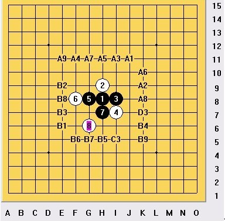

棋型探讨
#1 棋型探讨 作者：左伟光 发表时间：2010-9-16 12:37:11
1、八卦
可能很多人都会认为，八卦的防守能力很强。但强在什么地方？对于任意一个理论，我们不但要知其然，更要知其所以然。个人认为，八卦的防守强就强在最大限度的压制的对方的线路。如下图。

此为雨月的一路走法，其中2、4、6、8这4个子形成了典型的八卦阵。下面来看一下这几个子分析控制了哪条线路。
2 手控制的线路有 A1B1 、 A2B2 、 A4B4 、 A5B5
4
手控制的线路有
A
#2 Re:棋型探讨 作者：岳麓小棋后 发表时间：2010-9-16 13:00:15
图片挂了
#3 Re:棋型探讨 作者：冷酒一杯 发表时间：2010-9-16 18:24:33
很浅，很细，很帅